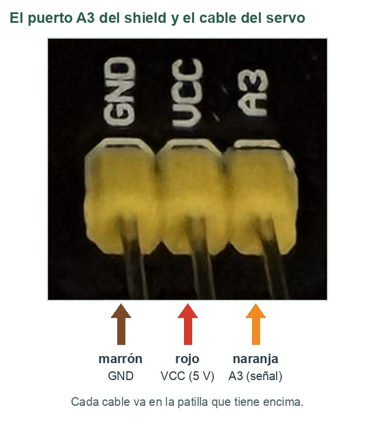
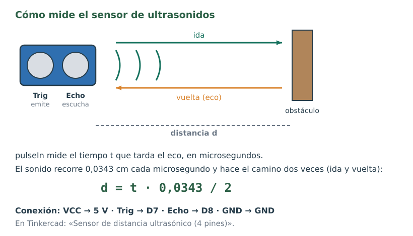
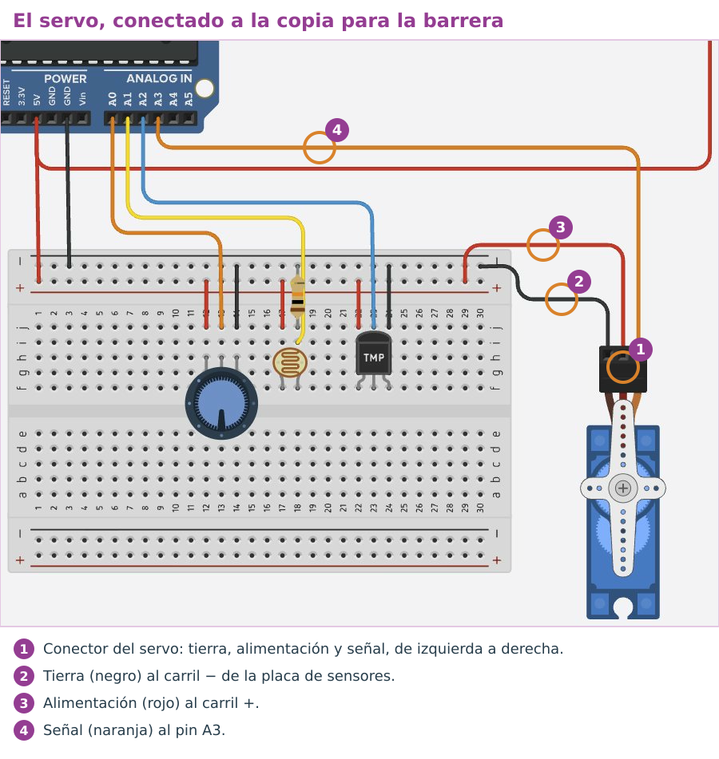
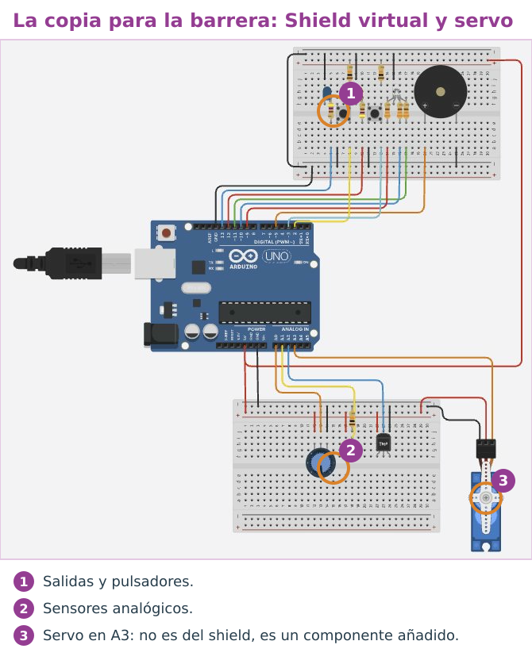
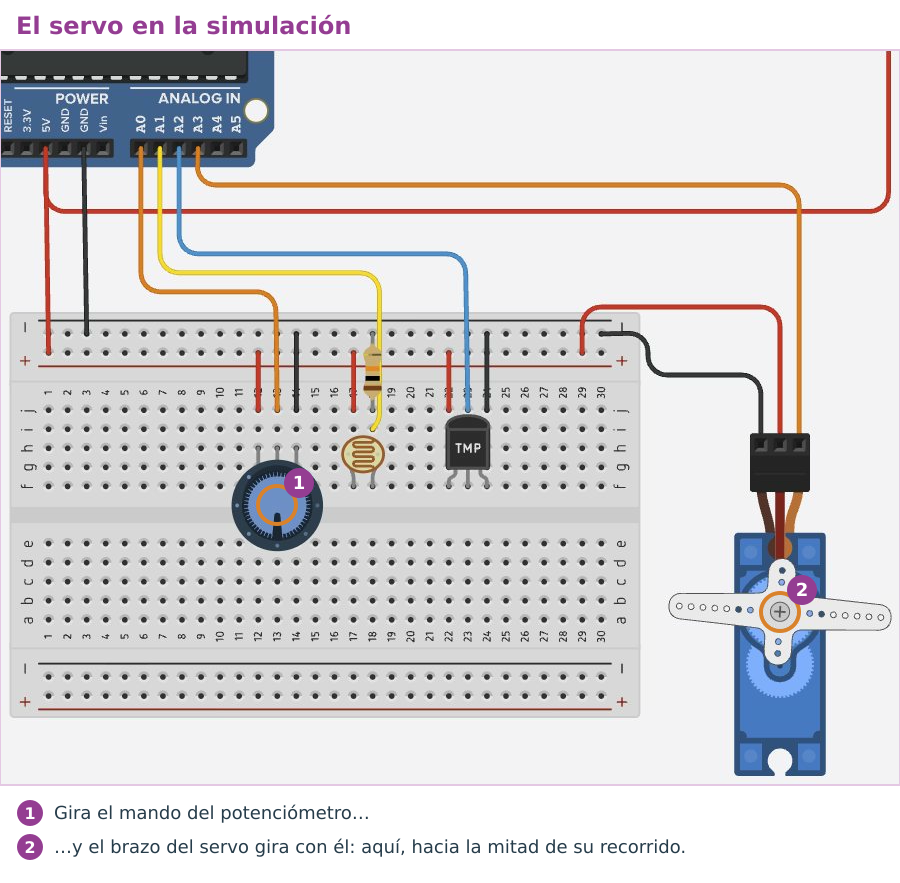

El servo
Un servo es un motor pequeño que no da vueltas: gira hasta un ángulo entre 0° y 180° y se queda ahí, haciendo fuerza para no moverse. Dentro lleva su propio sensor de posición: es un sistema en lazo cerrado en miniatura. El nuestro es el SG90.
Tiene tres cables: marrón (GND), rojo (5 V) y naranja (la señal, que le dice a qué ángulo ir). Se enchufa al puerto A3 del shield, que tiene justo esas tres patillas, rotuladas GND, VCC y A3: el marrón va en GND, el rojo en VCC y el naranja en A3. A3 es una entrada analógica, pero los pines A0 a A5 también funcionan como pines digitales, y para el servo eso es lo que hace falta.

Programar el servo
Para el servo se usa una librería: un conjunto de órdenes ya escritas que se añaden con #include.
| Orden | Qué hace |
|---|---|
#include <Servo.h> | Añade la librería del servo. Va en la primera línea. |
Servo barrera; | Crea un servo y le pone un nombre (aquí, barrera). |
barrera.attach(A3); | Le dice en qué pin está su señal. Va en setup(). |
barrera.write(90); | Lo lleva a 90°. Cualquier número de 0 a 180. |
analogWrite: solo encienden (255) o apagan (0). En el LED RGB eso afecta al rojo (9) y al azul (10).Pasar de un rango a otro: map
El potenciómetro da números de 0 a 1023 y el servo quiere ángulos de 0 a 180. map hace la regla de tres:
angulo = map(lectura, 0, 1023, 0, 180);
Se lee así: «convierte lectura, que va de 0 a 1023, a un número que vaya de 0 a 180». Si la lectura es 512 (la mitad), da 90 (la mitad). map trabaja con números enteros: los decimales se tiran, no se redondean.
Ejemplo: el potenciómetro mueve el servo
// El potenciómetro mueve el servo
#include <Servo.h> // librería para manejar servos
Servo barrera; // un servo que se llama «barrera»
const int POT = A0;
void setup() {
barrera.attach(A3); // la señal del servo va al puerto A3
}
void loop() {
int lectura = analogRead(POT); // de 0 a 1023
int angulo = map(lectura, 0, 1023, 0, 180); // de 0 a 180 grados
barrera.write(angulo);
delay(20);
}Ahora tú. Si el potenciómetro da 300, ¿a qué ángulo va el servo? Calcúlalo como lo haría map.
Ver solución
300 · 180 / 1023 = 52,78… y map tira los decimales: 52°.
El sensor de ultrasonidos
El sensor HC-SR04 mide distancias como un murciélago: emite un sonido demasiado agudo para que lo oigamos y mide cuánto tarda en volver el eco.

Tiene cuatro patillas. Con cables, VCC va a 5 V, Trig al pin 7, Echo al pin 8 y GND a GND. En el shield, los puertos D7 y D8 te dan esas señales, y cada uno tiene también su 5 V y su GND.
Ejemplo: medir la distancia y verla en el monitor serie
// Medir distancias con el sensor de ultrasonidos
const int TRIG = 7; // disparo
const int ECHO = 8; // eco
void setup() {
pinMode(TRIG, OUTPUT);
pinMode(ECHO, INPUT);
Serial.begin(9600);
}
void loop() {
digitalWrite(TRIG, LOW);
delayMicroseconds(2);
digitalWrite(TRIG, HIGH); // disparo de 10 microsegundos
delayMicroseconds(10);
digitalWrite(TRIG, LOW);
long tiempo = pulseIn(ECHO, HIGH, 30000); // microsegundos de ida y vuelta (0 si no vuelve)
float distancia = tiempo * 0.0343 / 2; // en centímetros
Serial.println(distancia);
delay(100);
}delayMicroseconds(10)espera 10 microsegundos (millonésimas de segundo): es el disparo.pulseIn(ECHO, HIGH, 30000)devuelve cuántos microsegundos tarda el eco. Si en 30 000 µs no vuelve, devuelve 0.longyfloatson tipos de número:longadmite enteros muy grandes yfloatadmite decimales. En el programa los decimales se escriben con punto:0.0343.
Ahora tú. El eco tarda 1166 µs en volver. ¿A qué distancia está el obstáculo?
Ver solución
d = 1166 · 0,0343 / 2 = 20,0 cm.
En Tinkercad: una copia con el servo y el sensor
El servo y el sensor de ultrasonidos no forman parte del shield: se enchufan en sus puertos libres. Por eso no se añaden al Shield virtual, que tiene que seguir siendo igual que el shield. Para el reto, duplica el Shield virtual y conéctaselos a la copia. Es lo que harás siempre que un montaje necesite algo que el shield no trae.

- En tus diseños, duplica el Shield virtual (rueda dentada → Duplicar) y llama a la copia Reto R4 - Barrera.
- Abre la copia y arrastra un Microservomotor a la derecha de la placa de los sensores. Pasa el ratón por las tres patillas de su conector: de izquierda a derecha son tierra, alimentación y señal.
- Une la tierra con el carril − de la placa de los sensores, la alimentación con el carril + y la señal con el pin A3 del Arduino.
- Añade un Sensor de distancia ultrasónico (4 pines) cerca de la placa de los sensores. Pasa el ratón por sus patillas para ver cuál es cada una: une «Potencia» con el carril +, «Tierra» con el carril −, «Desencadenador» (es Trig) con el pin 7 y «Eco» (es Echo) con el pin 8.
- Durante la simulación, haz clic en el sensor: aparece delante un objeto que puedes arrastrar para cambiar la distancia.

Para probar el servo, pega en la copia el ejemplo del potenciómetro que mueve el servo y gira el mando durante la simulación:

El reto de hoy
Reto R4 · Barrera automática
La barrera (el servo) está bajada, a 0°. Cuando algo se acerca a menos de 20 cm del sensor, sube a 90°, espera 3 segundos y vuelve a comprobar. Pruébala en tu copia Reto R4 - Barrera y después en tu placa.
Está conseguido cuando… en la placa, la barrera sube al acercar la mano a menos de 20 cm y baja al retirarla.
Si te atascas: el programa con huecos
Rellena cada ____: cada hueco es una palabra, un número o un signo que ya has visto en esta página.
// Reto R4: barrera que se levanta cuando algo se acerca
#include <Servo.h>
Servo barrera;
const int TRIG = 7;
const int ECHO = 8;
const int CERCA = ____; // centímetros: más cerca que esto, se abre
void setup() {
barrera.attach(____);
pinMode(TRIG, OUTPUT);
pinMode(ECHO, INPUT);
Serial.begin(9600);
barrera.write(0); // empieza bajada
}
void loop() {
digitalWrite(TRIG, LOW);
delayMicroseconds(2);
digitalWrite(TRIG, HIGH);
delayMicroseconds(10);
digitalWrite(TRIG, LOW);
long tiempo = pulseIn(ECHO, HIGH, 30000);
float distancia = tiempo * 0.0343 / 2;
Serial.println(distancia);
if (distancia > 0 && distancia < ____) { // 0 = no ha vuelto el eco
barrera.write(____); // sube
delay(3000); // espera a que pase
} else {
barrera.write(____); // baja
}
delay(100);
}Cuando funcione en la placa: enséñalo funcionando para que se anote en la lista de los retos. Después, en la tarea de Moodle Retos Arduino (código), pulsa Editar entrega (la primera vez, Agregar entrega), escribe R4 y pega debajo tu programa. Pulsa Guardar cambios. Cada reto nuevo va debajo del anterior.
| Lo que ves | Qué compruebas |
|---|---|
| El servo tiembla o no se mueve | Mira el orden de los cables en el puerto A3: marrón en GND, rojo en VCC y naranja en A3. |
| La distancia siempre vale 0 | ¿Están cruzados Trig y Echo? ¿Llega el eco? Apunta el sensor a una superficie plana. |
| La barrera sube y baja sin parar | Mira en el monitor serie qué distancia lee. Si cambia mucho, sepárate un poco del límite de 20 cm. |
Compruébalo
Relaciona cada orden con lo que hace.
Relaciona cada orden con lo que hace.
", "showMinimize": false, "itinerary": {"showClue": false, "clueGame": "", "percentageClue": 40, "showCodeAccess": false, "codeAccess": "", "messageCodeAccess": ""}, "cardsGame": [{"url": "", "x": 0, "y": 0, "author": "", "alt": "", "audio": "", "color": "#000000", "backcolor": "#ffffff", "eText": "barrera.attach%28A3%29", "urlBk": "", "xBk": 0, "yBk": 0, "authorBk": "", "altBk": "", "audioBk": "", "colorBk": "#000000", "backcolorBk": "#ffffff", "eTextBk": "Dice%20en%20qu%C3%A9%20pin%20est%C3%A1%20la%20se%C3%B1al%20del%20servo"}, {"url": "", "x": 0, "y": 0, "author": "", "alt": "", "audio": "", "color": "#000000", "backcolor": "#ffffff", "eText": "barrera.write%2890%29", "urlBk": "", "xBk": 0, "yBk": 0, "authorBk": "", "altBk": "", "audioBk": "", "colorBk": "#000000", "backcolorBk": "#ffffff", "eTextBk": "Lleva%20el%20servo%20a%2090%20grados"}, {"url": "", "x": 0, "y": 0, "author": "", "alt": "", "audio": "", "color": "#000000", "backcolor": "#ffffff", "eText": "map%28lectura%2C%200%2C%201023%2C%200%2C%20180%29", "urlBk": "", "xBk": 0, "yBk": 0, "authorBk": "", "altBk": "", "audioBk": "", "colorBk": "#000000", "backcolorBk": "#ffffff", "eTextBk": "Convierte%20la%20lectura%20en%20un%20%C3%A1ngulo"}, {"url": "", "x": 0, "y": 0, "author": "", "alt": "", "audio": "", "color": "#000000", "backcolor": "#ffffff", "eText": "pulseIn%28ECHO%2C%20HIGH%2C%2030000%29", "urlBk": "", "xBk": 0, "yBk": 0, "authorBk": "", "altBk": "", "audioBk": "", "colorBk": "#000000", "backcolorBk": "#ffffff", "eTextBk": "Mide%20cu%C3%A1nto%20tarda%20en%20volver%20el%20eco"}, {"url": "", "x": 0, "y": 0, "author": "", "alt": "", "audio": "", "color": "#000000", "backcolor": "#ffffff", "eText": "tiempo%20%2A%200.0343%20%2F%202", "urlBk": "", "xBk": 0, "yBk": 0, "authorBk": "", "altBk": "", "audioBk": "", "colorBk": "#000000", "backcolorBk": "#ffffff", "eTextBk": "Calcula%20la%20distancia%20en%20cent%C3%ADmetros"}], "isScorm": 0, "textButtonScorm": "Guardar la puntuación", "repeatActivity": true, "weighted": 100, "textAfter": "", "version": 2, "percentajeCards": 100, "type": 2, "showSolution": true, "timeShowSolution": 3, "time": 3, "evaluation": false, "evaluationID": "f96bc37c-5aaf-40e4-af65-a544218a46a6", "id": "idevice-1792837521837-a1y4v33e0", "msgs": {"msgSubmit": "Enviar", "msgClue": "¡Genial! La pista es:", "msgCodeAccess": "Código de acceso", "msgPlayStart": "Pulsa aquí para jugar", "msgScore": "Puntuación", "msgErrors": "Errores", "msgHits": "Aciertos", "msgMinimize": "Minimizar", "msgMaximize": "Maximizar", "msgFullScreen": "Pantalla Completa", "msgExitFullScreen": "Salir del modo pantalla completa", "msgNoImage": "Pregunta sin imágenes", "msgEndGameScore": "Comience la partida antes de guardar la puntuación.", "msgScoreScorm": "La puntuación no se puede guardar porque esta página no forma parte de un paquete SCORM.", "msgOnlySaveScore": "¡Solo puede guardar la puntuación una vez!", "msgOnlySave": "Solo puede guardar una vez", "msgInformation": "Información", "msgYouScore": "Su puntuación", "msgAuthor": "Autoría", "msgOnlySaveAuto": "Su puntuación se guardará después de cada pregunta. Solo puede jugar una vez.", "msgSaveAuto": "Su puntuación se guardará automáticamente después de cada pregunta.", "msgSeveralScore": "Puede guardar la puntuación tantas veces como quiera", "msgYouLastScore": "La última puntuación guardada es", "msgActityComply": "Ya ha realizado esta actividad.", "msgPlaySeveralTimes": "Puede realizar esta actividad cuantas veces quiera", "msgClose": "Cerrar", "msgAudio": "Audio", "msgNumQuestions": "Número de tarjetas", "msgTryAgain": "Necesitas al menos %s% de respuestas correctas para obtener la información. Inténtalo de nuevo.", "msgEndGameM": "Has completado el juego. Tu puntuación es %s.", "msgUncompletedActivity": "Actividad no completada", "msgSuccessfulActivity": "Actividad superada. Puntuación: %s", "msgUnsuccessfulActivity": "Actividad no superada. Puntuación: %s", "msgTypeGame": "Relaciona", "msgCheck": "Comprobar", "msgRestart": "Reiniciar"}}